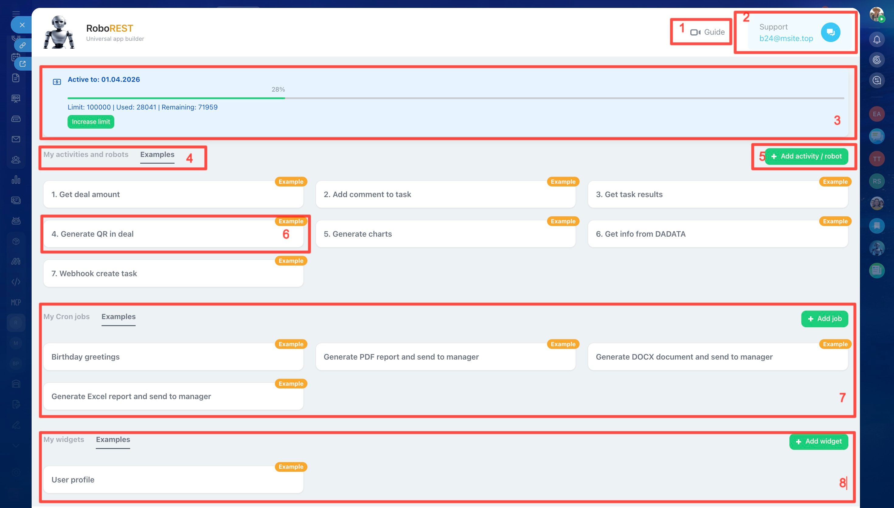

RoboREST user guide
RoboREST is a Bitrix24 app for building custom robots and activities in Python. Use it when standard automation is not enough: connect external APIs, work with files and databases, build reports, run scheduled tasks, and add widgets.
- Integrations with external services via API.
- Custom automation logic for your processes.
- Reports, charts, and data processing inside scripts.
- Widgets and extra UI elements.
Who is RoboREST for?
- Integrators — ship custom scenarios that Bitrix24 does not provide out of the box.
- Portal administrators — automate routine work and reduce manual effort.
- Business analysts — connect CRM, ERP, and other systems.
- Project managers — run complex but manageable business processes.
Quick start in 5 minutes
- Open the RoboREST dashboard.
- Click the button to add a new robot/activity.
- Pick a template or build from scratch.
- Run a test and verify the result.
- Add the robot/activity to the Bitrix24 business process you need.
- Optionally set up a schedule (cron).
Limits and pricing
- 100 requests per month are free.
- The limit includes robot/activity runs and cron jobs.
- Test runs from the editor are unlimited.
- Calls to created widgets are not billed.
- You can buy extra requests if needed.
Main interface (dashboard)
The diagram highlights the main areas of the interface. Below is a short legend by number.

- 📘 Guide — quick link to this page.
- 💬 Support — email and chat for setup and app questions.
- 📈 Limits and statistics — current request usage and remaining quota.
- 🤖 Robot/activity tabs — your scenarios and ready-made examples.
- ➕ Add — create a new robot or activity.
- 🧩 Scenario card — name, monthly run count, edit and delete actions.
- ⏰ Cron jobs — scheduled tasks, status, and run time.
- 🪟 Widgets — created widgets and where they are embedded.